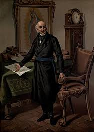
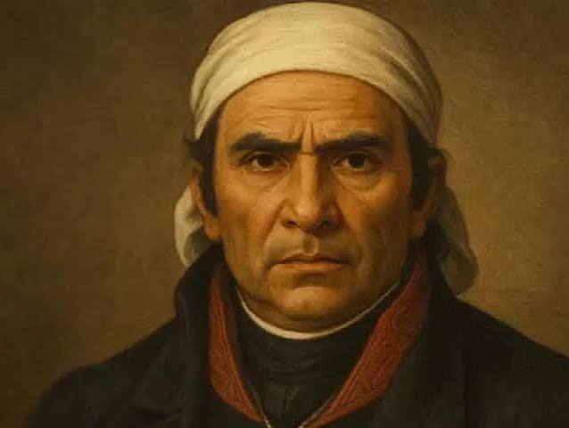
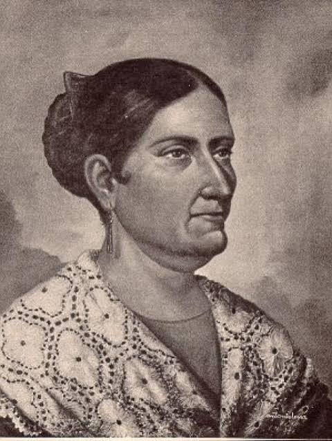
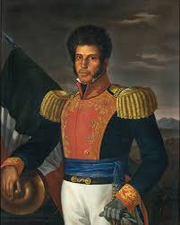
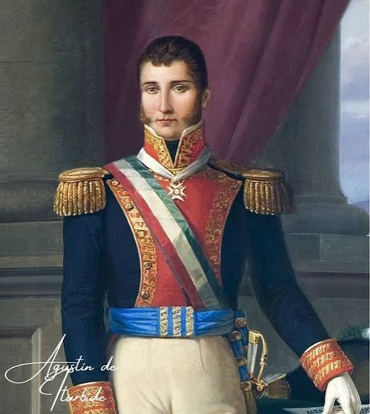

Personajes Ilustres
- Miguel Hidalgo y Costilla: Conocido como el Padre de la Patria, inició el movimiento insurgente con el Grito de Dolores el 16 de septiembre de 1810.
- José María Morelos y Pavón: Líder militar y político conocido como el Siervo de la Nación, autor de los Sentimientos de la Nación y organizador del Congreso de Anáhuac.
- Josefa Ortíz de Domínguez: La Corregidora de Querétaro, pieza fundamental de la conspiración de Querétaro que avisó a los insurgentes para adelantar el levantamiento armado.
- Ignacio Allende: Destacado militar y capitán insurgente que junto con Hidalgo lideró las primeras batallas del movimiento independentista.
- Vicente Guerrero: General insurgente que mantuvo viva la lucha en el sur y pactó con Agustín de Iturbide el Abrazo de Acatempan para consumar la independencia.
- Agustín de Iturbide: Comandante del Ejército Trigarante que promulgó el Plan de Iguala y encabezó la entrada triunfal a la Ciudad de México el 27 de septiembre de 1821.






¡VIVA MÉXICO!